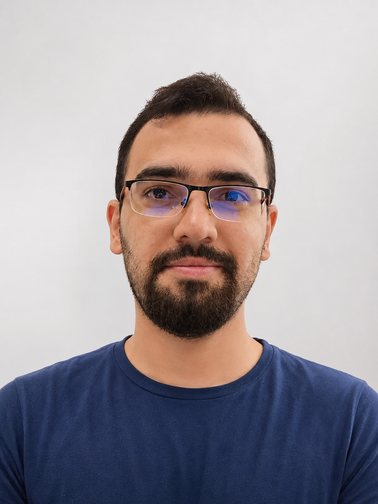

Natural language processing & multimodal learning
Mohammadmostafa Rostamkhani

I study how language and vision-language models reason and respond to challenging inputs. My work spans visual illusions, multilingual NLP, and model evaluation. I hold an M.Sc. in Artificial Intelligence from IUST and currently work as an NLP Researcher at ZharfaTech.
About &
education
Academic background
My research interests sit at the intersection of language, vision, and reasoning. I have worked on benchmarks for multimodal perception, multilingual claim retrieval, puzzle reasoning, and hate speech detection.
-
Sep. 2022 – Nov. 2024
M.Sc. in Artificial Intelligence
Iran University of Science and Technology
Department of Computer Engineering · GPA: 19.52/20 · First in graduating cohort
Thesis: Enhancing Reasoning of Multimodal Models Using Text-to-Image and Large Language Models
Supervisor: Dr. Sauleh Eetemadi -
Sep. 2018 – Jul. 2022
B.Sc. in Computer Science
Iran University of Science and Technology
GPA: 19.13/20 · First in graduating cohort
Research
Interests & resources
- Multimodal learning and reasoning. Vision-language models, visual question answering, and perceptual challenges such as visual illusions.
- Natural language processing. Multilingual learning, claim retrieval, text classification, question answering, and token classification.
- Model evaluation. Studying language and multimodal models on tasks that test reasoning and robustness.
Research resources
- Illusory VQA
Experiment notebooks and released results accompanying our work on visual illusions. Benchmark datasets are available through the VQA-Illusion organization on Hugging Face.
- HASOC2023
Experiment notebooks for hate speech and offensive content detection in English and Indo-Aryan languages. Working-notes paper.
Publications
Publications & workshop contributions
-
Illusory VQA: Benchmarking and Enhancing Multimodal Models on Visual Illusions
IEEE/CVF Conference on Computer Vision and Pattern Recognition Workshops (CVPRW), MAR Workshop, 2025.
Spotlight at MAR, CVPR 2025; also presented as a spotlight at MAR, NeurIPS 2024.
-
Word2winners at SemEval-2025 Task 7: Multilingual and Crosslingual Fact-Checked Claim Retrieval
Proceedings of the 19th International Workshop on Semantic Evaluation (SemEval), 2025.
-
ROSHA at SemEval-2024 Task 9: BRAINTEASER A Novel Task Defying Common Sense
Proceedings of the 18th International Workshop on Semantic Evaluation (SemEval), 2024.
-
BAMO at SemEval-2024 Task 9: BRAINTEASER: A Novel Task Defying Common Sense
Proceedings of the 18th International Workshop on Semantic Evaluation (SemEval), 2024.
-
eagerlearners at SemEval2024 Task 5: The Legal Argument Reasoning Task in Civil Procedure
Proceedings of the 18th International Workshop on Semantic Evaluation (SemEval), 2024.
-
Detecting Hate Speech and Offensive Content in English and Indo-Aryan Texts
FIRE 2023 Working Notes, CEUR Workshop Proceedings, Vol. 3681, 2023.
-
ROZAM at SemEval 2023 Task 9: Multilingual Tweet Intimacy Analysis
Proceedings of the 17th International Workshop on Semantic Evaluation (SemEval), 2023.
Workshop contribution
Hate Speech and Offensive Content Identification For Low-Resource Languages
Widening NLP (WiNLP), 2023. Workshop contribution.
Teaching
Instruction & course support
Instructor
- Fall 2025
Gold Medal Training Course
Young Scholars Club
- Summer 2025
Top-40 Training Course
Young Scholars Club
Teaching Assistant
- Spring 2026
System 2
Sharif University of Technology · Graduate
- Fall 2025
Multimodal Models
IUST · Graduate
- Spring 2025
Deep Learning
IUST · Graduate
- Spring 2025
Computational Intelligence
IUST · Undergraduate
- Fall 2024
Embedded Systems
IUST · Undergraduate
- Fall 2024
Natural Language Processing
IUST · Graduate
- Spring 2024
Natural Language Processing
IUST · Undergraduate
- Spring 2024
Deep Learning
IUST · Graduate
- Spring 2024
Multi-Agent Systems
IUST · Graduate
- Spring 2023
Natural Language Processing
IUST · Undergraduate
- Spring 2022
Operating Systems
IUST · Undergraduate · Head Teaching Assistant
- Fall 2021
Operating Systems
IUST · Undergraduate
- Fall 2021
Artificial Intelligence
IUST · Undergraduate
- Fall 2020
Algorithm Design
IUST · Undergraduate
- Spring 2020
Data Structures
IUST · Undergraduate
- Fall 2019
Advanced Programming
IUST · Undergraduate
Experience
Research & professional work
- Aug. 2025 – Present
NLP Researcher
ZharfaTech
- Nov. 2024 – Apr. 2025
NLP Engineer
Dadmatech
- Sep. 2022 – Nov. 2023
Data Scientist, Business Intelligence
Middle East Bank
- Feb. 2022 – Sep. 2022
Developer
Trading Algorithm Lab, IUST
Technical skills
- Programming
- Python, C, C++, C#, JavaScript, VHDL, Verilog
- Machine learning and NLP
- PyTorch, TensorFlow, Keras, scikit-learn, XGBoost, Hugging Face Transformers, Sentence Transformers, Gensim, NLTK
- Data and vision
- NumPy, pandas, OpenCV
- Inference and tooling
- vLLM, Ollama, TensorBoard; Linux shell and Bash
- Visualization
- Matplotlib, Seaborn, Plotly Dash, Bokeh
Honors
Team achievement
Second place, Rayan AI 2025 World Finals
Member of AI Guardians of Trust, the team ranked second in the world finals.
Contact
Tehran, Iran